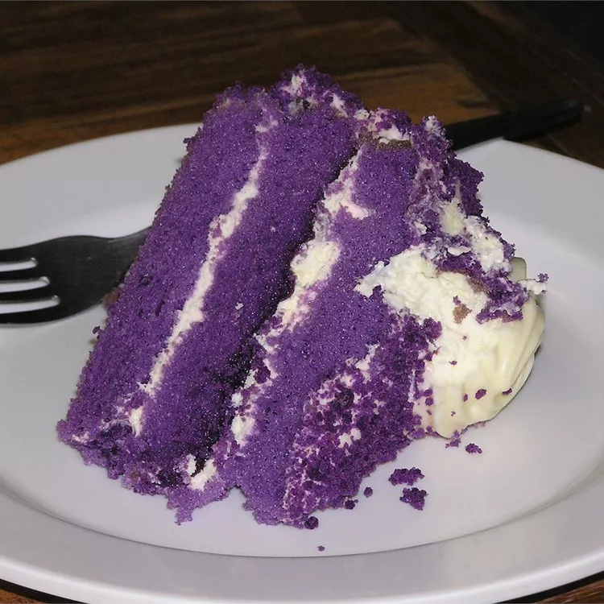

Ube-Macapuno Cake

Description
Ube cake is a deliciously light Filipino cake made with purple yams and macapuno (coconut sport).
Its vibrant purple color will look gorgeous on any dessert table!
Ingredients
Ube Cake:
- 2 ½ cups cake flour
- 3 teaspoons baking powder
- 1 teaspoon salt
- 1 cup ube (purple yam), cooked and finely grated
- ¾ cup milk
- 1 teaspoon vanilla extract
- 7 egg yolks, lightly beaten
- ½ cup corn syrup
- ½ cup vegetable oil
- 7 egg whites
- 1 teaspoon cream of tartar
- 1 cup white sugar
- 6 drops red food color
- 6 drops blue food coloring
- 1 (12 ounce) jar macapuno (coconut preserves)
Buttercream:
- 1 cup evaporated milk, chilled
- ¾ cup white sugar
- 1 cup butter, softened
- 1 drop violet food coloring
Steps
- Preheat the oven to 325 degrees F (165 degrees C). Line the bottom of three 9-inch round pans with parchment paper, but do not grease.
- Make the ube cake: Mix flour, baking powder, and salt together in a large bowl; set aside. Place grated ube in a large bowl. Combine 3/4 cup milk and 1 teaspoon vanilla; gradually blend into ube until smooth. Blend in egg yolks, corn syrup, and oil. Beat in flour mixture until smooth; set aside.
- Combine egg whites and cream of tartar in a large bowl; beat with an electric mixer until foamy. Gradually add sugar, then red and blue food coloring, continuing to beat until stiff peaks form. Fold 1/3 of the whites into batter, then quickly fold in remaining whites until no streaks remain. Pour batter into prepared pans.
- Bake in the preheated oven until a toothpick inserted into the center comes out clean, about 30 to 35 minutes. Invert pans on a wire rack and let cool upside down. When cool, run a knife around the edges to loosen cake from the pans. Spread coconut preserves onto the cooled cake layers; stack layers on a cake stand or serving plate.
- Make the buttercream: Combine evaporated milk and 3/4 cup sugar; set aside. Combine butter and sugar in a large bowl; beat with an electric mixer until smooth and creamy. Beat in food coloring, one drop at a time, until the desired tint is achieved. Frost top and sides of cake with buttercream.